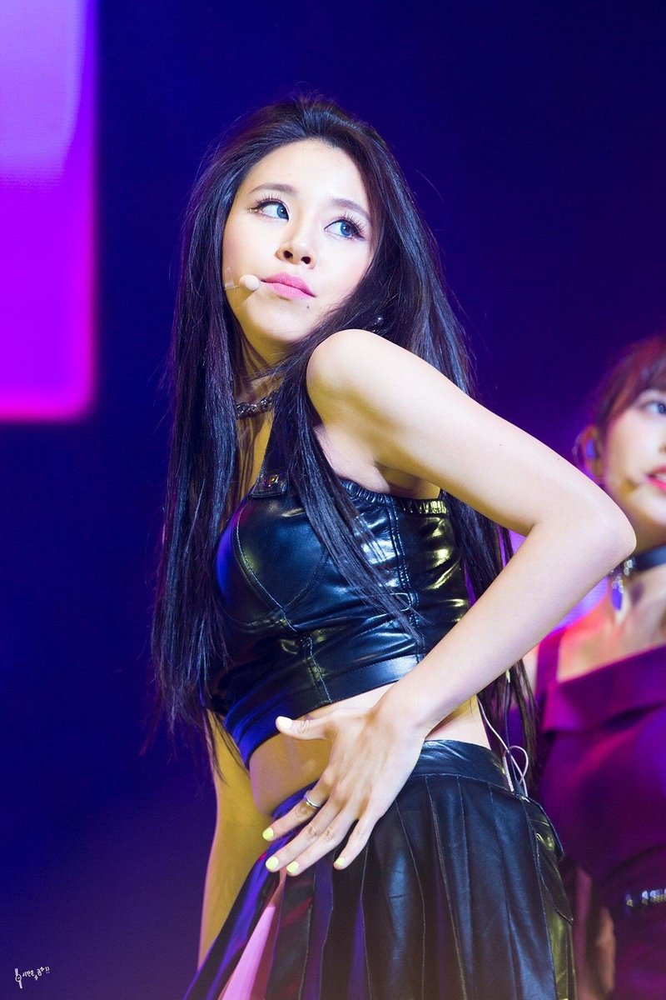

Son Chae-young (Hangul: 채영, born April 23, 1999 in Seoul, South Korea), better known by her first name, Chaeyoung, is a South Korean singer, rapper and dancer. A member of the girl group Twice, she was assigned the role of the group's main rapper.
Life and Career
Chaeyoung is from Dunchon-dong, Seoul, South Korea. Her family consists of her parents and younger brother named Son Jeong-hoon. She attended Hanlim Multi Art School for her secondary education and graduated alongside with Tzuyu on February 11, 2019. After a successful audition to JYP Entertainment which took place on June 6, 2012, Chaeyoung trained nearly three years before becoming a contestant on the 2015 show, Sixteen, where she was announced as a member of Twice in the finale. During her trainee years, Chaeyoung appeared in the music videos of GOT7's song, "Stop Stop It" and Miss A's "Only You".
Jyp Entertainment
 When she auditioned to join JYP Entertainment, the same company behind your fave K-Pop groups like GOT7 and MAMAMOO, Chaeyoung was just 13 years old. Yes, 13. Obvi, the audition went well, because she officially made her career debut with Twice in 2015, and never looked back.In addition to slaying on-stage with TWICE, Chaeyoung has also been known to lend a helping hand to other K-Pop groups. She previously appeared in the music videos for both GOT7's "Stop Stop It" and miss A's "Only You".
Interesting facts
1) Chaeyoung has 4 tattoos at the moment: tomatoes on left arm, carrots on left forearm, "shot through the heart" on neck, strawberry lips on wrist.
2) She always plays the same thing/order for Rock-Paper-Scissors. She tries to change but never does.
3) She loves to draw. She is the best drawer among the members. Her drawing is used in her limited edition album and Spris shoes.
4)Jihyo once used her 4 collaged picture from VLive screenshot as profile picture because she thinks she's so handsome with short hair, which Red Velvet's Yeri said it as well.